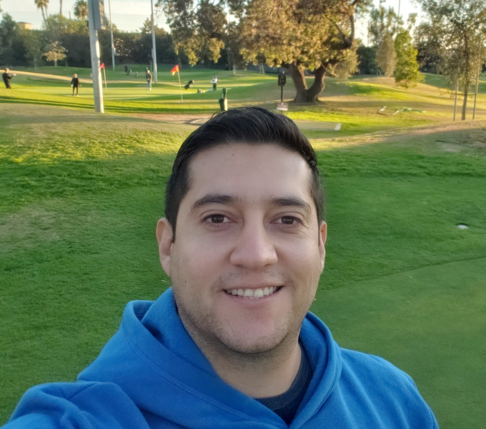
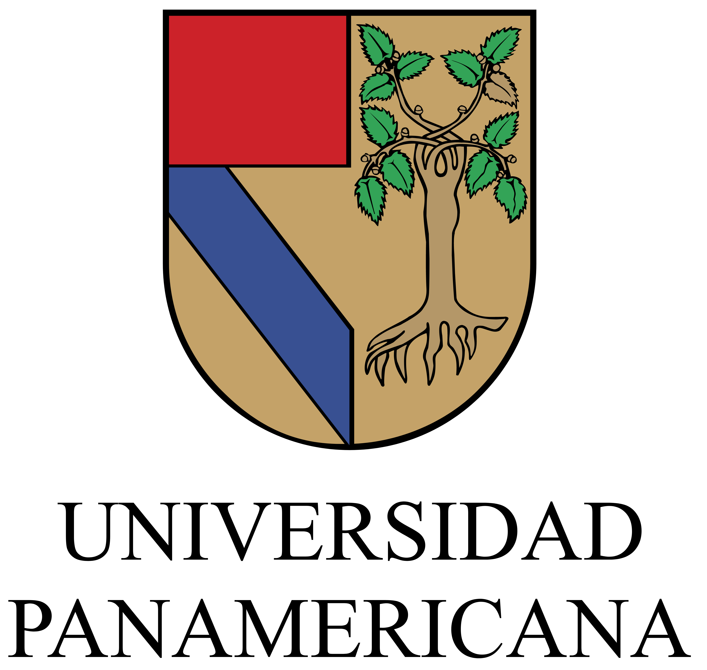
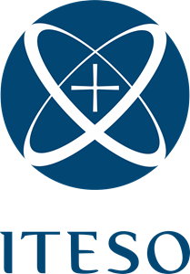
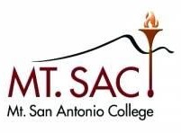
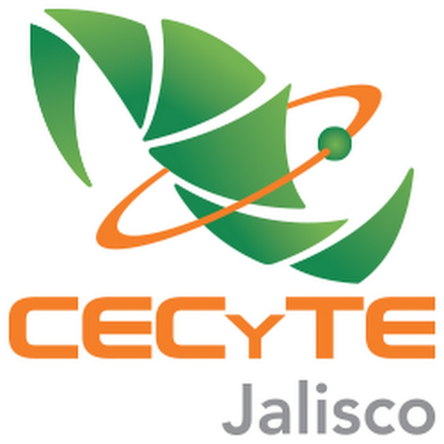
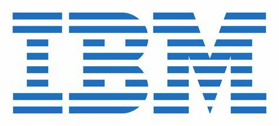

Moises' Resume
Moises Aguayo's Resume

Summary
- Result-driven Industrial Engineer with over a decade of expertise excelling in Scrum, Project Management and
Continuous Improvement methodologies such as Lean, Kanban, Design Thinking, PDCA and RCA.
- Certified Scrum Master, Product Owner, Agile Project Manager and ITIL V3 with a strong record of delivering successful projects,
optimizing teams' performance, and adding substantial business value. Adept at fostering cross-functional collaboration,
stakeholder management and achieving outstanding outcomes.
Formal Education




- Postgraduate degree on Technologic Innovation - Universidad Panamericana (2014)
- Bachelor's degree on Industrial Engineering - ITESO (2009 - 2013)
- English as Second Language - Mt. San Antonio College CA (2008 - 2009)
- Associate’s degree on Electromechanics - CECyTEJ (2005 - 2008)
Certifications
- Agile Project Management – Agile PM Academy, 2023
- Scrum Master Certification – Scrum Institute, 2018
- Scrum Product Owner Certification – Scrum Institute, 2018
- ITIL V3 for IT Service Management Certification – Axelos, 2016
Skills
- HARD SKILLS: Agile Project Management | Scrum Master | Scrum Product Owner | ITIL V3 |
Business Analysis | DevOps | Design Thinking | Kanban | Kaizen | Lean | SQL | PDCA | RCA
- SOFT SKILLS: Stakeholder Management | Problem Solving | Risk Management | Leadership |
Critical Thinking | Organization | Collaboration | Interpersonal Communication |
Adaptability | Time Management
- LANGUAGES: Spanish – Native| English – Advanced| Portuguese – Proficient
- TOOLS: Microsoft Azure DevOps | Microsoft 365 (office advanced) | JIRA | RALLY |
Confluence | ServiceNow | GitHub | SAP4 Hana | Slack | SharePoint | Teams |
OneDrive | Planner | Trello | Cognos | DBeaver | IBM QMF | Nlyte
Work Experience

DevOps Product Owner Jan 2022 – Kyndryl | Apr 2023
- Led the software development work for Asset Management applications, streamlining change management workflows, reducing AM Operations effort, and preparing systems for migration to SAP S4Hana and ServiceNow.
- Collaborated with global Stakeholders, Program Managers, Developers and Engineering teams to articulate a clear vision for the product to align the technical efforts with the overall business strategy.
- Gathered technical requirements and specifications in well-defined epics, features and user stories, to drive and manage the product development schedule from design to release in an Agile environment and Scrum framework.
- Led scheduled sessions with Stakeholders and technical teams to assess business requirements, prioritize the product backlog based on business value, manage identified risks and run sprint reviews to share progress.
- Engaged with customers, end users and development teams to gather feedback, validate requirements and ensure the product development, technical improvements and systems performance meets defined expectations.
- Restructured the DevOps Management System as part of Kyndryl spin-off from IBM, reducing software and infrastructure costs by millions of dollars and providing project visibility to global stakeholders.
DevOps Scrum Master & Operations Product Owner – IBM | Jan 2020 – Dec 2021
- Managed global projects for application segmentation and AM application sunset, resulting in reduced infrastructure and software costs, streamlined change management processes, and increased efficiency.
- Implemented a Scrum DevOps Framework for a technical tribe in multiple countries, significantly improving response time and DevOps cycle time for IBM Asset Management applications.
- Developed a Management System for RFID improvement projects, reducing investigation efforts and the change management cycle time while providing visibility to global operations managers and stakeholders.
- Coached 3 different squads on the adoption of Agile practices and principles, following a Scrum framework.
- Facilitated Scrum ceremonies for global squads, using creative ways to engage participants during virtual meetings.
- Proactively resolves team impediments, identify any risk and develops an action plan.
Operations Scrum Master & RFID Technical Architect – IBM | Jun 2016 – Dec 2019
- Led a project to migrate the Asset Management RFID solution to IBM Cloud, generating $75,000 USD in savings.
- Implemented a global process using RFID for asset validation, reducing validation time by 40% in IBM data centers.
- Designed and managed a project to deploy RFID technology in the IBM disposal facility, resulting in $100,000 USD in savings and reduced disposal cycle time by 30%.
- Collaborated with stakeholders, operations and technical experts to ensure the team’s roadmap and backlog priorities are maintained to enable a smooth agile process and minimize blockers.
- Led the adoption of Agile for the RFID local squad, achieving the IBM Agile Advocate badge.
- +++ ADD A PO IMPORTANT TASK FOR OPERATIONS SQUAD +++
New Products Manufacturing Team Leader – IBM | Oct 2014 – May 2016
- Developed a Management System for this new job role to lead and document the project execution to introduce new products to the manufacturing line according to Global PMO strategic plans.
- Collaborated with Stakeholders, Project Manager, Engineering and Operations teams daily to develop and manage action plans to mitigate project risks and resolve problems.
- Led 3 international assignments and managed the project execution in the manufacturing line to release more than 10 new products on time according to IBM global programs.
- Achieved the IBM Global Execution Excellence Award.
Manufacturing Supervisor – IBM | Mar 2013 – Sep 2014
Industrial Engineering Intern – IBM | Sep 2011 – Mar 2013
Customer Support Representative – TeleTech | Mar 2011 – Ago 2011
Other
- LinkedIn
- Contact me – moisesaguayo@gmail.com